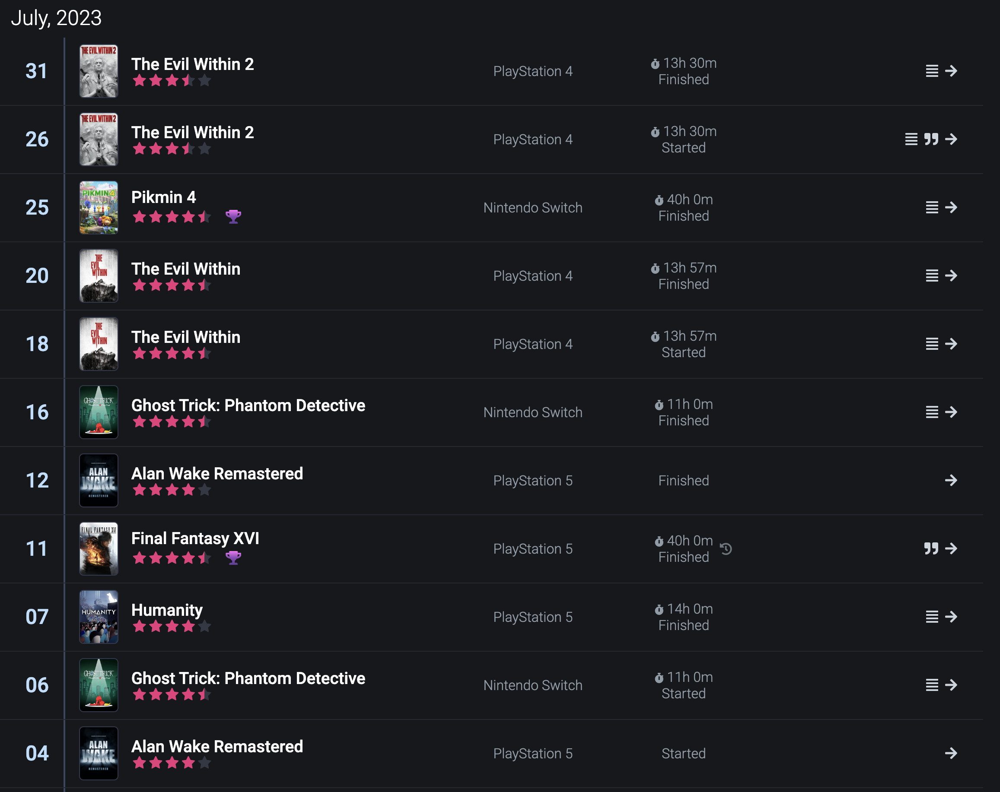
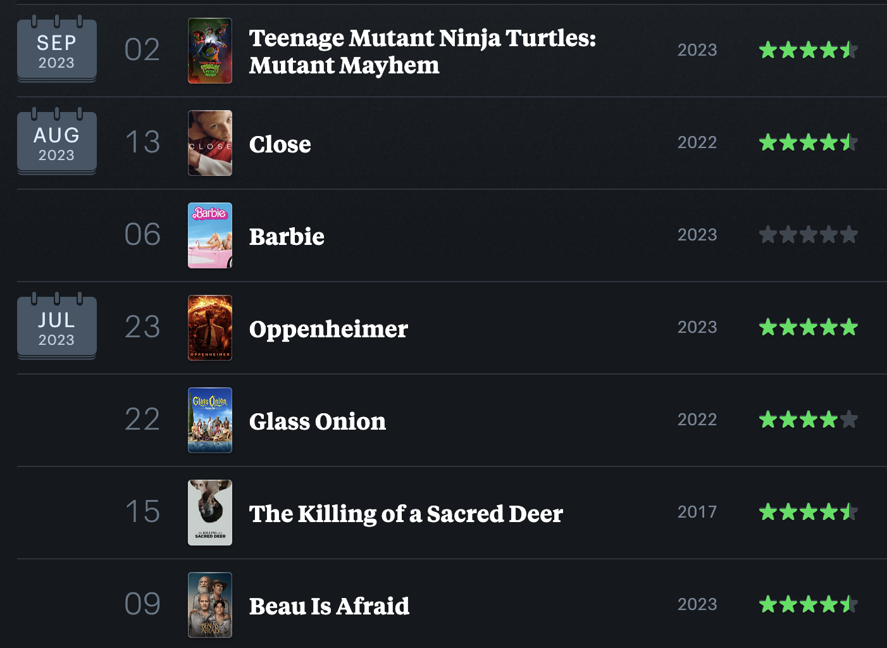
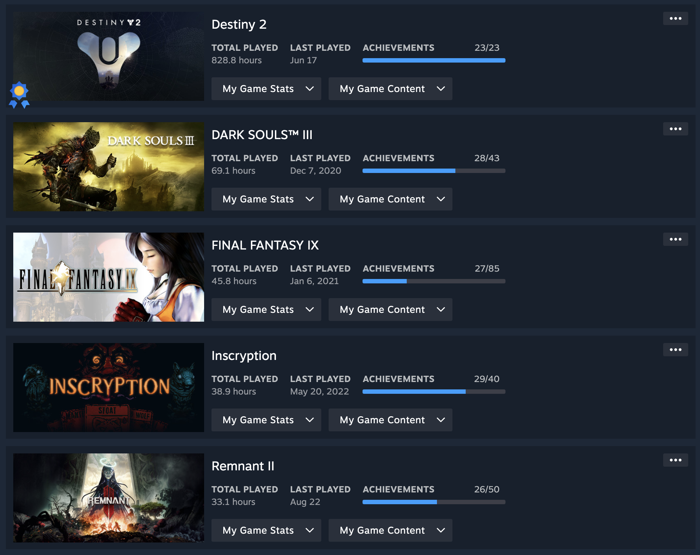

<!DOCTYPE html>
<html lang="en"></html>
<head>
    <meta charset="UTF-8">
    <title>Project 1, My Website</title>
    <link rel="stylesheet" href="css/styles.css">
    <link rel="stylesheet" href="https://use.typekit.net/zgh4nyi.css">
</head>
<body>
    <nav>
        <a class="navelement" href="index.html">HOME</a>
        <a class="navelement" href="likes.html">INTERESTS</a>
        <a class="navelement" href="activities.html">ONLINE ACTIVITIES</a>
    </nav>

    <div class="maincontent">

        <h1>GARRETT'S ACTIVITIES</h1>
        <p> <a href="https://linktr.ee/wistfulaether">Garrett's Linktree</a> — all of his accounts.</p>
        <p>While Garrett does not generally make his personal life and activities public on the internet, he does keep track of certain activities, thoughts, and reactions to media across various different sites in the form of logging and reviewing. Here we will see the places where these are tracked and the kind of footprint that he has through his various accounts.</p>

        <div class="mediasection">
            <div class="mediaflex">
                
                <div class="textflex">
    
                    <h2>Backloggd: Game Journaling</h2>
                    <p>The video game tracking and logging website Backloggd allows you to not only keep track of the games you play, but also when, for how long, and other specific details such as the platform they are played on, how you own them, etc. On top of reviewing games, Garrett keeps track of games that he plays each and every day through the website's journaling system, which allows anyone to see when he plays games, including specifically when starting and finishing them, down to the date, as shown in the example below.</p>

                    
                    <p>To see Garrett's full journal and what he plays each day, check out the <a href="https://www.backloggd.com/u/Wistful/journal/">Journal page</a> on his Backloggd profile.</p></p>
                </div>
            </div>
        </div>

        <div class="mediasection">

            <div class="mediaflex">
                
                <div class="textflex">
    
                    <h2>Letterboxd: Film Diary</h2>
                    <p>The film (and limited series) tracking website Letterboxd, like Backloggd, not only allows you to track what you watch and make reviews, but also journal exactly when you watch something in a timeline the website calls your Diary, such as in the example below.</p>

                    
                    <p>To see Garrett's full diary and what he has watched over the years, check out the <a href="https://letterboxd.com/WistfulAether/films/diary/">Diary page</a> of his Letterboxd profile.</p>

                </div>
            </div>
        </div>

        <div class="mediasectionlast">

            <div class="mediaflex">
                
                <div class="textflex">

                    <h2>Steam: Games Activity</h2>
                    <p>On Garrett's Steam profile, anyone can see his game activity including recently played games, total play time, all PC games that he owns, his Wishlist (which gives a further sense of the games he is interested in), and more.</p>

                    
                    <p>Be sure to check out Garrett's full <a href="https://steamcommunity.com/id/wistfulaether/">Steam profile</a>. </p>
                </div>
            </div>
        </div>

        

    </div>

    <div class="footerflex">
        <div class="footerelement"> 
            <p>Website designed by Garrett Ashton.</p>
        </div>

        <div class="footerelement">
            <a href="https://twitter.com/WistfulAether"> </a>
        </div>

        <div class="footerelement">
            <a href="https://letterboxd.com/WistfulAether/"> </a>
        </div>

        <div class="footerelement">
            <a href="https://www.backloggd.com/u/Wistful/"> </a>
        </div>

    </div>

</body>